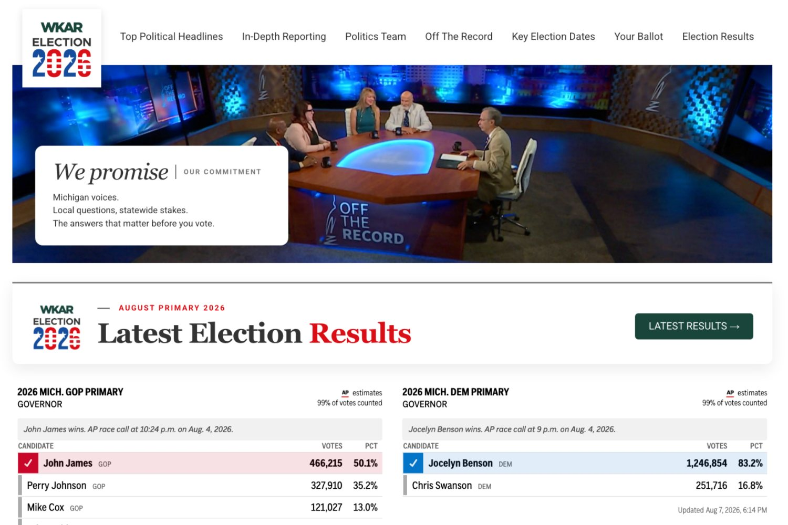
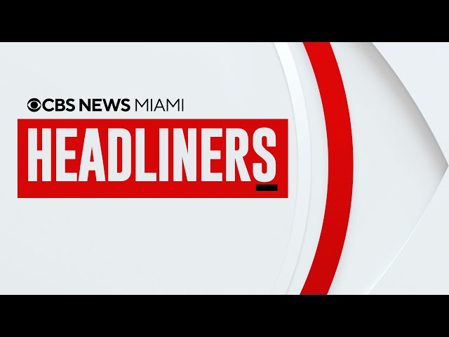

Seven case studies · 2009–2026
The work
Each of these started the same way: a gap nobody was filling, a product designed to fill it, and a written system so it kept running after the launch adrenaline wore off. Five are recent products and independent prototypes. Two are from earlier in my career, proof that this is not a résumé rebrand.
Seven gaps turned into products, teams and measurable results. Tap any project for the full story.


 The Signal · The Signal+ · sent editions
The Signal · The Signal+ · sent editions
The Signal
I identified the audience gap, conceived The Signal’s identity and editorial architecture, and led a three-week build. I then built the module and contribution system that sustains the Sunday edition and extended it into The Signal+.
Sunday: 30 original sends · 56.5% opens · 8.4% clicks
Signal+: 4 original sends · 55.3% opens · 4.0% clicks · resends excluded
A weekly briefing for mid-Michigan, sent every Sunday morning since launch. I identified the audience opportunity, conceived the product, shaped its identity and module architecture, and led a three-week build, then wrote the contribution model that let a small newsroom sustain it and extend it into The Signal+.
8.4%
Sunday click rate · ≈7× median
30
Original editions
3
Weeks to launch
Read the case study →
Election 2026
I wrote the 2026 strategy, created the product structure and editorial promise for a dedicated political brand, and hired a full-time local politics reporter. I handed the team a launch plan that connected the site, newsletters and on-air coverage ahead of Michigan’s August primary.
4 sections · 6 journalists · site, newsletters and on-air
WKAR did not have a dedicated election destination. Building one was part of the 2026 strategy I wrote. I set the product structure, sections and editorial promise, hired a full-time local politics reporter to expand our in-depth coverage going into election season, and handed a clear plan to the launch team.
Four sections. One promise.
Six journalists on the front door.
Three channels. One identity.
Read the case study →


Audience & Growth
I led a digital-first strategy around deeper reporting, audience analytics, search and stronger distribution. This was operating work as much as content work: new expectations, new products and a clearer front door. The audience settled at a materially higher baseline.
+101.6% · about 3× the typical-station benchmark
A strong newsroom with an underserved digital front door. I led a digital-first strategy built around deeper reporting, audience data, search and stronger distribution. During that transformation the audience settled at a materially higher baseline, the floor moved, not just the peak.
+101.6%
Daily-average active users
≈ 3×
vs. typical-station benchmark
Read the case study →
Building stronger newsrooms
At NBC Bay Area, I led Today in the Bay and its team through daily production and major breaking-news coverage. At CBS News Miami I helped run a 100+ person operation and recruited, hired and onboarded more than 30 employees. At WKAR I built freelance and contribution systems, clarified ownership and made journalists’ beats and expertise more visible to the audience.
30+ hires · 100+ employee operation
Across NBC Bay Area, CBS News Miami and WKAR, the work is the same: build capacity, clarify ownership, develop people and create the systems that let strong journalism endure.
30+
Hired at CBS News Miami
100+
Employee operation
MSU
Students in the newsroom
Read the case study →



The Miami stream
I oversaw the January 24, 2022 launch of CBS News Miami’s 24-hour stream: staffing models, continuous-news workflows, original programming and daily editorial execution. I then conceived Headliners, designed the format around existing newsroom capacity and took the stream-only weekly review from idea to air in two weeks.
24-hour channel · Headliners launched in 2 weeks
I oversaw the January 24, 2022 launch of the 24-hour CBS News Miami streaming channel—staffing models, workflows, original programming and daily editorial execution—then conceptualized Headliners, a stream-only weekly review launched in two weeks. Proof that a 24-hour channel needs its own programming, not repeats of the broadcast.
Read the case study →
eightWest
News loaned me to programming to build a commercial daily show from scratch. I conceived the editorial format, created repeatable segments, helped design the sponsor fee structure, wrote integrations that still felt worth watching, and ran the early marketing and social accounts. The show premiered October 5, 2009—and seventeen years later, eightWest is still on the air.
17 years · still on the air
The earliest proof of the pattern. I conceived and launched a daily lifestyle show in Grand Rapids, the editorial concept, the production workflow and the brand. Seventeen years later it is still on the air, produced by people I never worked with, running on a system that outlived me.
Read the case study →

Independent Product Lab
On nights and weekends, I built a live public-record tracker around one fast-moving Michigan issue, then designed a private evidence-first desk that keeps collection, analysis, editorial approval and publication visibly separate.
Live Michigan tracker · source-linked views · named human gate
Built independently, entirely outside WKAR: a live Michigan Data Center Tracker, purpose-built issue products and a private evidence-first news desk. AI assists inside the workflow; source receipts and human editorial authority define it.
Read the case study →